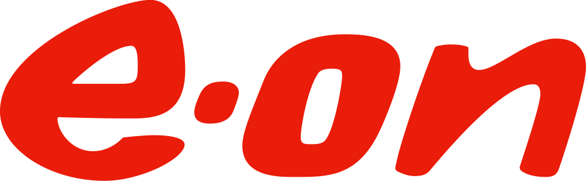

E.ON
E.ON은 독일 에센에 본사를 둔 다국적 전력 유틸리티 기업이다. 세계 최대 규모의 투자자 소유 전력 서비스 제공업체 가운데 하나이다.
최종 업데이트

E.ON는 어떤 브랜드인가
E.ON은 독일 에센에 본사를 둔 다국적 전력 유틸리티 기업이다. 세계 최대 규모의 투자자 소유 전력 서비스 제공업체 가운데 하나로 꼽힌다.
30개가 넘는 국가에서 사업을 하며 고객은 5천만 명이 넘는다. 이름은 그리스어 αἰών(aion)에서 유래한 라틴어 aeon에서 왔으며 '시대' 또는 '무한'을 뜻한다.
여기에 마침표를 더해 에너지(E)와 조명(ON)이라는 보조적 의미를 담았다. 독일 주가지수 DAX의 구성 종목이며 최고경영자는 Leonhard Birnbaum이다.
E.ON는 어떻게 시작되고 성장했나
E.ON은 2000년 에너지 기업 VEBA와 VIAG가 합병하면서 출범했다. 2002년 1월 영국의 Powergen을 인수했고, 2003년에는 Ruhrgas를 인수해 가스 시장에 진출했다.
이후 스웨덴의 Sydkraft와 러시아의 OGK-4도 인수했으며 이들은 각각 E.ON Sverige, E.ON UK, E.ON Russia 등의 이름으로 바뀌었다. Powergen 인수를 통해 미국의 Louisville Gas & Electric Energy도 넘겨받아 E.ON US로 운영했으나 2010년 PPL Corporation에 매각했다.
E.ON의 브랜드 아이덴티티는 무엇인가
E.ON은 2000년 VEBA와 VIAG의 합병으로 출범해 화석 에너지 사업을 Uniper로 분리한 독일의 대형 전력 유틸리티이다.
E.ON의 대표 제품과 서비스는 무엇인가
E.ON은 전력 소매, 배전, 원자력 사업을 운영하는 유틸리티 기업이다. 2016년에는 기존 화력 발전과 에너지 거래 사업을 분리해 새 회사 Uniper를 만들었다.
2018년 3월에는 E.ON, Innogy, RWE 사이의 자산 교환 계약을 통해 Innogy의 유틸리티 부문을 인수하기로 발표했고, 최종 실행은 2020년 7월에 이루어졌다. 영국에서는 2020년 E.ON UK가 새 자회사 브랜드 E.ON Next로 고객을 옮기겠다고 밝혔다.
E.ON Next에는 Npower와 Powershop에서 넘어온 고객 200만 명도 포함되어 있다.
E.ON는 지금 어떤 상태인가
E.ON은 2014년 11월 앞으로 화석 에너지를 하지 않겠다고 밝혔고, 화석 에너지 사업을 Uniper로 이전해 2016년 1월 1일 가동을 시작했다. 같은 해 9월 프랑크푸르트 증권거래소 상장으로 Uniper 지분 53%를 매각했으며 남은 지분은 핀란드의 Fortum에 팔았다.
2019년에는 영국 "Big Six" 전력사 가운데 처음으로 영국 내 모든 전력 고객을 재생에너지 전력으로 전환했다. 다만 튀르키예에는 여전히 석탄 발전을 보유하고 있다.
E.ON 로고는 어떻게 변해왔나
자주 묻는 질문
E.ON는 어느 나라 브랜드인가요?
E.ON는 독일의 에너지·산업재 브랜드입니다.
E.ON는 언제 설립되었나요?
E.ON는 2000년 설립되었습니다.
E.ON의 브랜드 아이덴티티는 무엇인가요?
E.ON은 2000년 VEBA와 VIAG의 합병으로 출범해 화석 에너지 사업을 Uniper로 분리한 독일의 대형 전력 유틸리티이다.
E.ON의 대표 제품은 무엇인가요?
E.ON은 전력 소매, 배전, 원자력 사업을 운영하는 유틸리티 기업이다.
E.ON는 현재 어떤 상태인가요?
E.ON은 2014년 11월 앞으로 화석 에너지를 하지 않겠다고 밝혔고, 화석 에너지 사업을 Uniper로 이전해 2016년 1월 1일 가동을 시작했다.
E.ON의 본사는 어디에 있나요?
E.ON의 본사는 에센에 있습니다(위키데이터 기준).
E.ON의 공식 웹사이트는 어디인가요?
E.ON의 공식 웹사이트는 https://www.eon.com/ 입니다.
출처와 검증
E.ON 관련 참고: 공식 웹사이트 · 위키데이터 Q270223 · 한국어 위키백과 · 영어 위키백과. 브랜드명은 한글과 원어를 함께 표기하되 데이터에 없는 표기는 만들지 않습니다. 기원 국가·설립연도는 검수된 정의문에서 확인된 값을 우선하고, 없을 때만 공식 웹사이트 URL이 일치하는 위키데이터 개체의 값을 씁니다. 탄생일의 월·일은 위키데이터, 위키백과 정보상자, 본문 가운데 같은 연월로 확인되는 값만 싣고, 출처끼리 다르면 싣지 않습니다. 위키데이터 값은 2026-11-13 기준입니다.